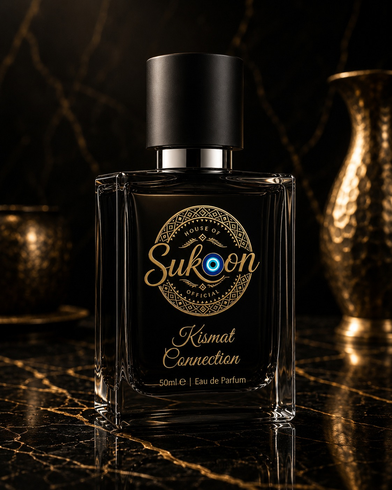

SUKOON
Ancient energies, crafted with modern fine perfumery — precise, sensorial and deeply personal.

OUR STORY
House of Sukoon was created with the belief that fragrance is not merely perfume. It is emotion. It is intention. It is memory. It is identity.
House of Sukoon Official began with a simple belief: that a fragrance is not just worn, it is lived. Every bottle is hand-blended in small batches, marrying pure, responsibly-sourced ingredients with the timeless language of energy — the moods, intentions and rhythms that have guided people for centuries.
We are not superstition. We are ancient energies, crafted with modern fine perfumery — precise, sensorial and deeply personal.
THE HOUSE DNA
Each formula rests on our Signature Base DNA of sandalwood, amber and white musk, so that whichever energy you choose, it carries the unmistakable soul of Sukoon.
FOUNDER'S STORY
“House of Sukoon did not begin in a factory or a boardroom. It began with a simple frustration: that most fragrances are chosen for how they smell to other people, rarely for how they make the wearer feel. I wanted to build something smaller and more deliberate — a house where every bottle carried an intention before it carried a note.”— Founder, House of Sukoon
A SMALL HOUSE, DELIBERATELY BUILT
What began as a handful of trial blends, mixed and remixed until they finally felt right, slowly became the five fragrances we are proud to put our name behind today.
Every batch is still small. Every formula is still tested on real skin, on real days, in real emotion — not just on paper.
House of Sukoon is not trying to be the loudest name in fragrance. It is trying to be the most honest one — a house you return to because a bottle once made you feel exactly like yourself, on a day you needed it most.
Meet the collection ↗